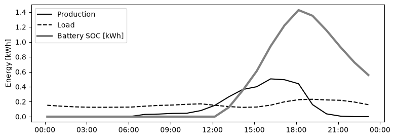

Battery storage#
As we have seen before, the absence of energy storage means that we are forced to sell the energy produced by the solar panel to the grid when it exceeds the consumption. However, selling is not the best strategy considering that the selling price is much lower than the buying price. A battery can be used to store the excess production, decoupling in time the moment of generation and the moment of consumption. For this reason, battery storage is becoming more and more popular in combination with solar panels, but it can be also employed alone, because it offers a series of advantages: if we have a dynamic pricing regime, we can charge the battery when the price is low and discharge it when the price is high. Also, it offers some backup power in the event of blackouts.
To perform the calculations, I will employ the same setup as in the solar panels only case, while adding a battery pack with a capacity of 1.92 kWh and a peak power output of 1200 W. This setup is sold at a price of around 1230 Eur.
I have considered a very simple case in which the battery is charged when the output of the solar panel is greater than the consumption, and it is discharged when the situation is reversed. This does not take into account any optimization based on forecasting the energy price, which is a much harder task but which could potentially optimize the use of the battery.
# Compute production
import numpy as np
import pandas as pd
import pvlib
from pvlib.iotools import get_pvgis_hourly
from pvlib.temperature import sapm_cell
import matplotlib.pyplot as plt
import matplotlib.dates as mdates
lat, lon, alt = 50.817205, 4.377434, 90.452
tilt, azimuth = 90, 223 # vertical, south-facing (pvlib: 180 = south)
tz = "Europe/Brussels"
data, meta = get_pvgis_hourly(
latitude=lat,
longitude=lon,
start=2019,
end=2023,
raddatabase="PVGIS-SARAH3",
components=True,
surface_tilt=tilt,
surface_azimuth=azimuth,
usehorizon=False
)
data.index = data.index.tz_convert("Europe/Brussels")
site = pvlib.location.Location(latitude=lat, longitude=lon, tz=tz, altitude=alt)
solpos = site.get_solarposition(data.index)
hz = pd.read_csv("../data/horizon_balcony.csv")
hz_az, hz_hg = hz["azimuth"].values, hz["horizon_height"].values
sun_horizon = np.interp(solpos["azimuth"], hz_az, hz_hg, period=360)
blocked = (solpos["apparent_elevation"] <= sun_horizon)
data["poa_direct_corr"] = data["poa_direct"].where(~blocked, 0.0)
h = np.radians(hz_hg)
diff = ((hz_az - azimuth + 180) % 360) - 180
front = np.abs(diff) <= 90
weights = np.cos(np.radians(diff[front]))
svf = np.sum(weights * np.cos(h[front])**2) / np.sum(weights)
data['poa_diffuse'] = svf*data['poa_sky_diffuse'] + data['poa_ground_diffuse']
data['poa_global'] = data['poa_direct_corr'] + data['poa_diffuse']
data = data.iloc[:-1] # drop last row
temp_cell = sapm_cell(
poa_global=data["poa_global"],
temp_air=data["temp_air"],
wind_speed=data["wind_speed"],
a=-3.56,
b=-0.075,
deltaT=3
)
n_panels = 2
length = 1.96 #m
height = 1.134 #m
area = n_panels * length * height #m2
eta_panel = 0.253
eta_sys = 0.85
P_nom = n_panels * 500 #W
price = 550 #Eur
gamma = -0.0035 # 1/°C
power = (data["poa_global"]* P_nom/1000 * (1 + gamma*(temp_cell - 25)))
data['P_prod'] = power * eta_sys #W
data['E_prod'] = data['P_prod']/1000 # kWh
# Compute consumption
rlp = pd.read_excel("../data/RLP0N 2026 Electricity.xlsb", sheet_name="RLP96U", skiprows=5, engine="calamine")
rlp = rlp.set_index("CET")
# Scale to median Brussels annual consumption
E_cons_median = 2000 # kWh/year
rlp["E_cons"] = (E_cons_median * rlp["RLPestU"])
# Convert quarter-hourly to hourly
rlp_hourly = (rlp["E_cons"].resample("h").sum())
rlp_lookup = pd.DataFrame({
"month": rlp_hourly.index.month,
"day": rlp_hourly.index.day,
"hour": rlp_hourly.index.hour,
"E_cons": rlp_hourly.values
})
data["month"] = data.index.month
data["day"] = data.index.day
data["hour"] = data.index.hour
data_load = data.copy()
data_load["timestamp"] = data.index
data_load = data_load.merge(rlp_lookup, on=["month", "day", "hour"], how="left")
data_load = data_load.set_index("timestamp")
data_load["E_cons"] = data_load["E_cons"].fillna(data_load["E_cons"].shift(24))
bat_capacity = 1.92 # kWh
bat_power = 1200 # W
bat_price = 1230 # Eur
buy_price = 0.30 # Eur/kWh
sell_price = 0.05 # Eur/kWh
def simulate_battery(prod, load, capacity=bat_capacity, power=bat_power, eta=0.95, soc_min=0.0, dt=1.0):
"""Greedy dispatch: charge from surplus, discharge to cover deficit. prod/load in kWh per step dt [h]."""
p_max = power / 1000 * dt # kWh per step
e_min = soc_min * capacity
soc = e_min
n = len(prod)
soc_hist = np.empty(n)
grid_import = np.empty(n)
grid_export = np.empty(n)
for i in range(n):
net = prod[i] - load[i]
if net >= 0:
charge = min(net, p_max, (capacity - soc) / eta) # drawn from PV
soc += charge * eta
grid_export[i] = net - charge
grid_import[i] = 0.0
else:
need = -net
discharge = min(need / eta, p_max / eta, soc - e_min) # taken from battery
soc -= discharge
grid_import[i] = need - discharge * eta
grid_export[i] = 0.0
soc_hist[i] = soc
return soc_hist, grid_import, grid_export
soc, imp, exp = simulate_battery(data_load["E_prod"].values, data_load["E_cons"].values)
data_load["soc"] = soc
data_load["E_grid_bat"] = exp - imp
data_load["self_consumed_bat"] = data_load["E_prod"] - np.maximum(data_load["E_grid_bat"], 0)
data_load["money_saved_bat"] = data_load["self_consumed_bat"] * buy_price
data_load["money_earned_bat"] = np.maximum(data_load["E_grid_bat"], 0) * sell_price
money_saved_bat = data_load["money_saved_bat"].sum()
money_earned_bat = data_load["money_earned_bat"].sum()
money_total_bat = money_saved_bat + money_earned_bat
yearly_total_bat = money_total_bat / 5 # average over 5 years
money_total_30y_bat = yearly_total_bat * 30 # over 30 years
print(f'Money saved: {data_load["money_saved_bat"].sum():.2f} €')
print(f'Money earned: {data_load["money_earned_bat"].sum():.2f} €')
print(f'Total: {data_load["money_saved_bat"].sum() + data_load["money_earned_bat"].sum():.2f} €')
print(f'Average yearly total: {yearly_total_bat:.2f} €')
print(f'Total over 30 years: {money_total_30y_bat:.2f} €')
day = "2023-06-21"
fig, ax = plt.subplots(figsize=(9, 3))
ax.plot(data_load.loc[day, "E_prod"], label="Production", c='k')
ax.plot(data_load.loc[day, "E_cons"], label="Load", c='k', ls='--')
ax.plot(data_load.loc[day, "soc"], label="Battery SOC [kWh]", c='gray', lw=3)
ax.xaxis.set_major_formatter(mdates.DateFormatter("%H:%M", tz=tz))
ax.set_ylabel("Energy [kWh]")
ax.legend()
plt.show()
Money saved: 835.65 €
Money earned: 0.19 €
Total: 835.84 €
Average yearly total: 167.17 €
Total over 30 years: 5015.06 €

Given this, and considering again the same 5 years period between 2019 and 2023, the results are the following: Money saved: 835.64 Eur Money earned: 0.2 Eur Total 835.84 Eur
The battery substantially improves the amount of energy that is self-consumed. Basically no energy is sold to the grid, and the total money earned is around 300 Eur higher. However, the price of the setup is also more than double meaning that it would take more time to break even. At a yearly rate of 167.17 Eur, the total of the investment over 30 years would be 5015.02 Eur